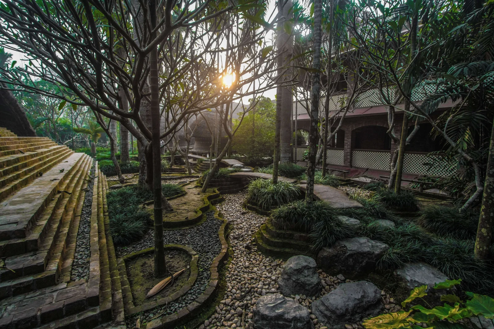

Thesis Internal Review
Overview of the Project

The idea is that people can be self sufficient and raise their own foodstuffs and have sufficient milk (Scientifically "Complete Food") to save time for other important activities.
Bamboo Basics:
Bamboo was recognized as a solution for climate change at COP 27
Key Factors for being a Self Sufficient Community, Assuming at first only intrested people live their:
| Factors | Details | Remarks | Practical Scale (1/10) |
|---|---|---|---|
| Education | - Bamboo Basics > Growing, Harvesting Treating, Preserving, Desinging and Construction. - Clothes > Cotton, Wool and Spinning wheels and Handwoven textiles. 4 Pair + 2 Pair Woven / Year - Pottery and Wooden > Most storage on Earthen pots and wooden structures. 2 Months To Prepare Each, Too much time - Foods & Raw Material> 4 Person Family, 1-2 Hours Max Daily average. - Processing > Equipments and tools to grow and process food and raw material for basic needs. - Milk > Milk, Wastage of Food, Fuel | The skills must pass on in generations. It must be vell documented and then there can be advancements**. Dependecies: Matchsticks for fire*, Paper/Ink for reading and writing. Assuming there is water body or suffcient ground water | 6 |
| Minimal Footprint | Fuel > Firewoods (Brances) and CowDung cakes Assuming that now there's no petroleum footprint Unrequired > No/Low Plastic needed as everything is fresh No/Low preservatives needed Low HEALTH PROBLEMS | 8 | |
| Medicine | As the food is less processed automatically there will be less diseases, clinically proven. Herbs > Many herbs have anti-inflamatory, anti-pyretics, anti-biotics, skin, abdomen, muscles etc | Due to influence of time diseases have become more profound, so some external medicne is needed specially for citical conditions. | 6 |
| Engagements | Reading Books Writing and Drawing Important Works Singing and Learning Instruments Dancing Festivals | This is very personal, so it's assumed that people with interest will come. | 8 |
| Quality of Life | Noise > As there are no manufacturing process so the sound of birds chirpping, the river/water or waterfalls, the wind touching the skin and the surfaces can easily be heard like trees. Odour > We usually get the smell of coal on roads during rain but in villages we can smell the mud and later the blossoming flowers and vegetation. Scale and Preception > The human scale is goving away especially if we see the metropolitan cities. But it's autmatically present if we live in harmonay and on ground to a few floors scale. Touch > As the Human body is soft and can get hurt if not carefully checked the things around if organic can help to reduce vulnerability. Eg fan blade felling on a student in Ravindra as it's sharp. Taste and speech > Due to organic farming and less storing the nutrients will remain so automatically taste will remain without artifical falvours | The sound, fragrance, scale, natural perspective, touch and taste are evolved for the speices living in nature which include Humans. So it always feels home if maintained well. | 9 |
Live Project
Case Studies
As there's no specific example for the project it's split into construction both primitive and modern. Along with it the community part is important else no one would like to stay in it.
Temple Built with Bamboo, Guwhati, Assam ( Visited )
Badrikashram, Rajpura, Punjab ( Community and Simple Techniques )
The site is located in Badrikasamaram and it's lively and used thatch roof and


Gurukul, Mayapur, West Bengal (The Self-Suffcient Community-Based Edu )
A Gurukul in Mayapur build by an unknown architect uses brick and bamboo architecture in 1984. It shows strong education focused communites can sustain even with low carbon materials and short building lifecycles as the maintainance is not a burden instead an integeral part of life.



Literature Review & Refrences
NECTAR: North East Center for Technology Application and Reach
Building With Bamboo
BambooU
Site Analysis > Hypothetical Site
Area of ~ 10 Acres is choosen which is enough for a small to medium settelments
SHIVAM VERMA
20110028